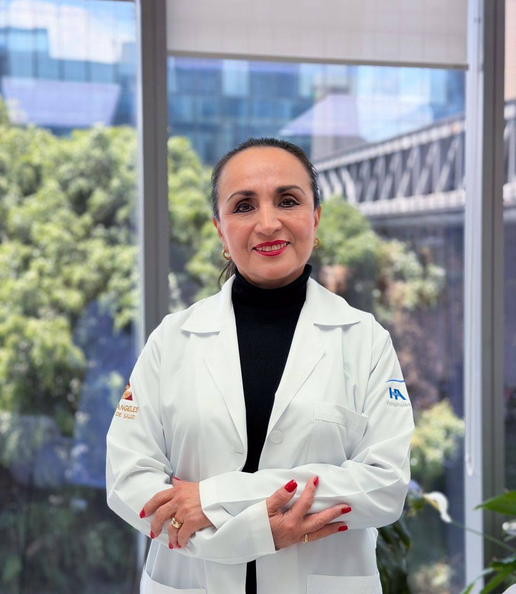
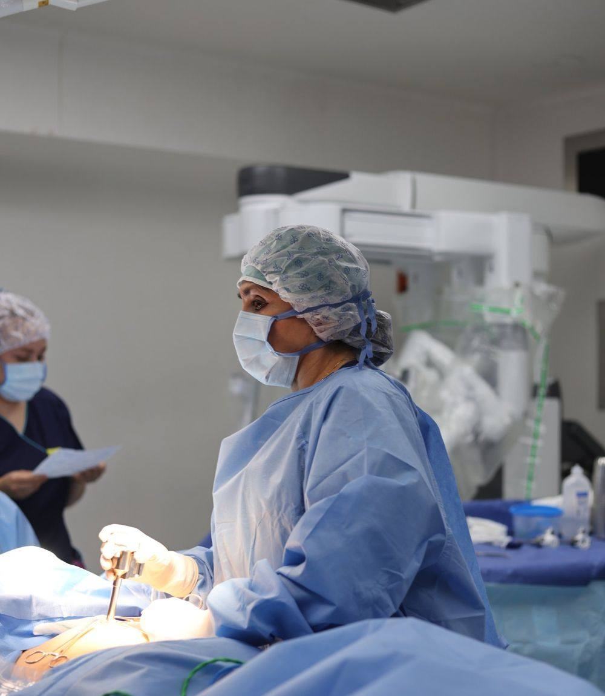

Ginecología y Obstetricia
Dra. Lorena Martínez González
Acompaña a mujeres en cada etapa: la primera consulta, el ciclo, la anticoncepción, el embarazo y la fertilidad. Su consulta es un espacio para preguntar sin pena.
Revisión anualAnticoncepciónVPH y PapanicolaouSOMPEmbarazo
Formación y cédula profesional: por confirmar.